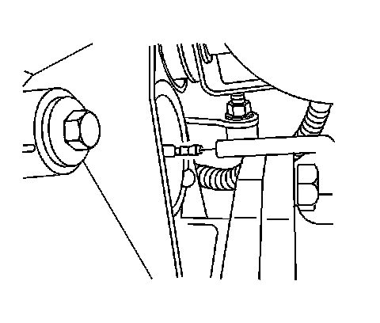

Vent Hose Replacement (9.25 Inch Axle)
Vent Hose Replacement (9.25 Inch Axle)
Removal Procedure
1. Raise the vehicle. Refer to Lifting and Jacking the Vehicle.
2. Remove the front differential carrier shield, if equipped.
Important: Make note of the routing in order to aid in reassembly.
3. Remove the vent hose (1) from the wiring bundle (2), S4WD axles only.
4. Remove the vent hose from the retainer clips, all axles.

5. Remove the vent hose from the differential carrier assembly.
6. Remove the vent hose from the vehicle.
Installation Procedure
1. Install the vent hose to the vehicle.
^ Route the vent hose the same way as when removed.
^ Ensure the hose is free of kinks and routes clear of sharp components.
^ Ensure the vent hose is not plugged.
2. Connect the vent hose to the differential carrier assembly.
3. Install the vent hose (1) to the wiring bundle (2), S4WD axles only.
4. Install the vent hose to the retainer clips, all axles.
5. Install the front differential carrier shield, if equipped.
6. Lower the vehicle.